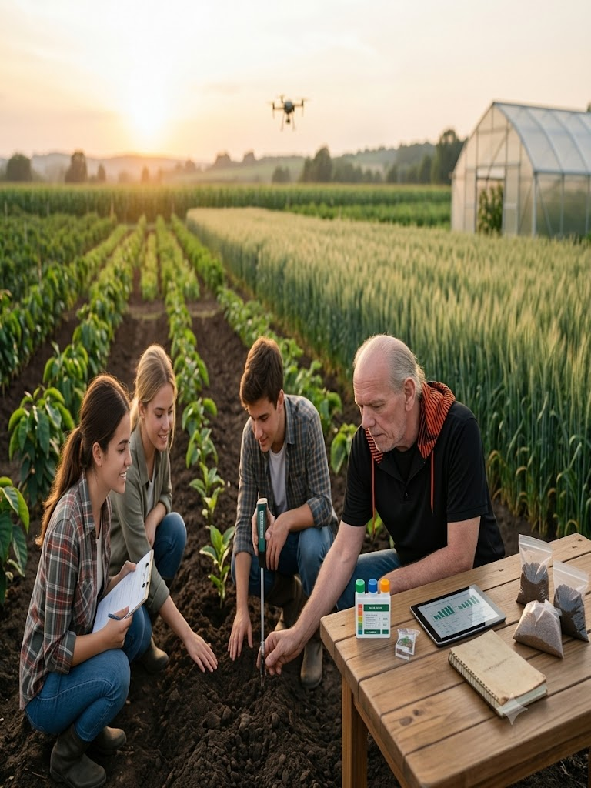

Professional Agricultural Consulting, Soil Science, Plantation Development, Sustainable Farming and Agricultural Training.
Explore Services Contact Us
Macadam Agroadvisory provides independent agricultural consulting, technical advisory services, sustainable farming solutions and professional training for farmers, educational institutions and agricultural organizations.
Our goal is to combine scientific knowledge with practical field experience to improve productivity while protecting natural resources.
Learn MoreSoil health assessment, fertility improvement and sustainable soil practices.
Guidance on crop planning, nutrition management and productivity improvement.
Plantation development, maintenance and long-term management guidance.
Irrigation planning and water conservation practices.
Training programs for students, farmers and institutions.
Soil fertility, health assessment and nutrient management.
Scientific crop production and productivity improvement.
Planning, establishment and long-term management.
Efficient irrigation and water conservation strategies.
We deliver practical agricultural training through workshops, field demonstrations, academic sessions and technical guidance for students, farmers and agricultural professionals.
Evidence-based agricultural recommendations.
Combining field knowledge with modern agriculture.
Environmentally responsible farming practices.
Supporting students, universities and farmers.
Whether you are a farmer, institution, university or agricultural organization, we are here to help with expert guidance and practical solutions.